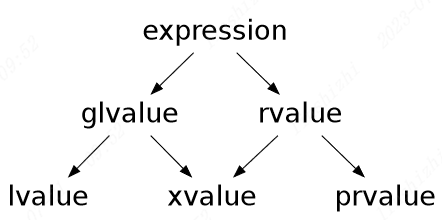
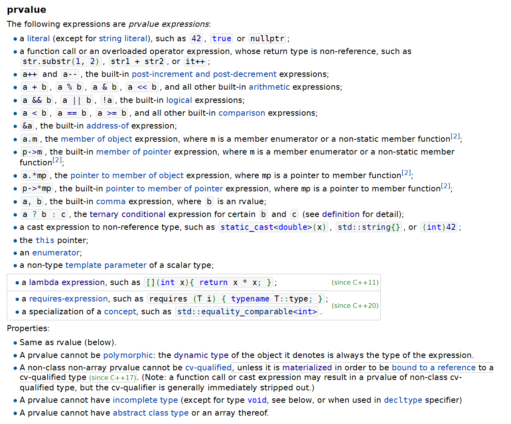
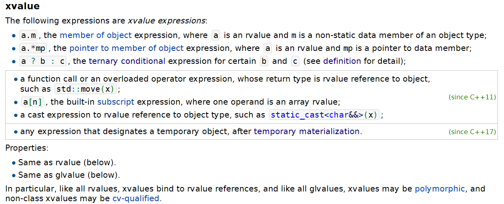
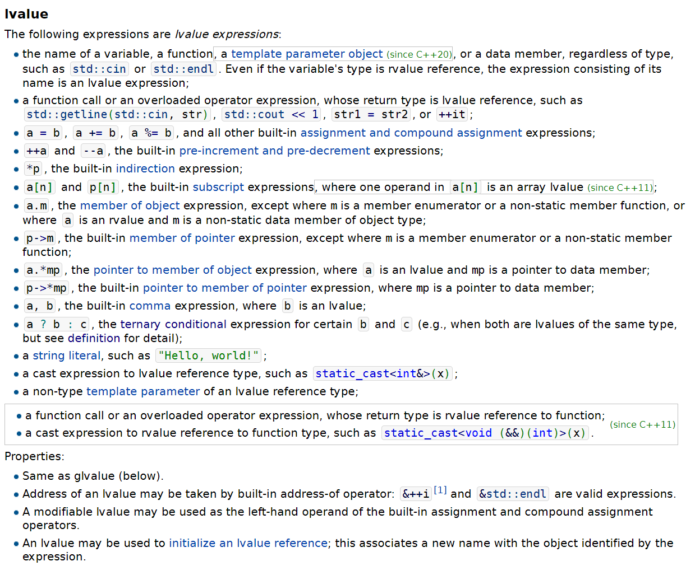

value categories
Table of Contents
1. Overview
This document is talking about Value Category in CPP, which is a property of Expression in CPP but nor a property of variables. That means a you should not say a variable is left value or right value, variable should always a left value.
The meaning of Value Category is about the result of an Expression, whether the result is left value or right value.
I will explain tyeps of Value Category first.
2. Types of Value Category

- A glvalue is an expression whose evaluation determines the identity of an object, bit-field, or function.
- A prvalue is an expression whose evaluation initializes an object or a bit-field, or computes the value of an operand of an operator, as specified by the context in which it appears, or an expression that has type cv void.
- An xvalue is a glvalue that denotes an object or bit-field whose resources can be reused (usually because it is near the end of its lifetime).
- An lvalue is a glvalue that is not an xvalue.
- An rvalue is a prvalue or an xvalue.
Every Expression should be in one of following categories:
- lvalue
- xvalue
- prvalue
3. Pure rvalue (prvalue)
An prvalue expression whose result of evaluation:
is an object initialized by the prvalue which will stores into its context.
for example, {} is a prvalue expression it’s result will generate and object which will store into the variable a that denoted by expression a.
int a = {};
if you use lvalue reference to reference to it then you will get an error:
int& a = {}; // Error, attempt to reference to result of rvalue expression // via a lvalue reference.
Evaluation of operand of an operator that the operand specified as rvalue.
For example:
A operator=(A&&);
By the first rule following code should work, it use default initializer to initialize an int. Should also work to user-defined class.
// Correct int&& a = {}; // Correct struct C { int a; }; struct C&& c = {};
Failed Cases:
// Failed: You are attempt to assign a right value to a // left value reference. int& a = {};
The result of evaluating a prvalue expression is an object that initialized by a prvalue. For example,
int a = {};
where the right side of ’=’ is prvalue expression and left side is lvalue refernce. The result of ’{}’ is an object that initialized by prvalue.
In, this example Temporary materialization conversion is used to generated and xvalue object from prvalue so able to assign to a glvalue.

3.1. Conversion
Temporary Materialization Conversion
4. eXpiring value (xvalue)
A glvalue that can be reused.

5. lvalue
A glvalue that is not an xvalue.
The result of a glvalue is the entity denoted by the expression.

6. rvalue
A prvalue or an xvalue.
7. glvalue
7.1. Conversion
standard conversion: lvalue-to-rvalue
8. FAQ
8.1. Why ’non-static member function’ is prvalue ?
Non-static member functions don’t have “a well defined location”. The “location” of a virtual member function is unknown (in general) at compile-time. And even ignoring that, the “location” of member functions is never really handled in C++.
Yes, there are “pointers to member functions”, but notice that these types are not convertible to pointers to other things. The standard doesn’t even allow implementations to permit conversion to integers and back via reinterpretcast the way it does for normal pointers. They’re not “pointers” in the sense of memory addresses.
Member functions do not have locations in the same sense that other C++ things do. So classifying them as prvalues make sense.